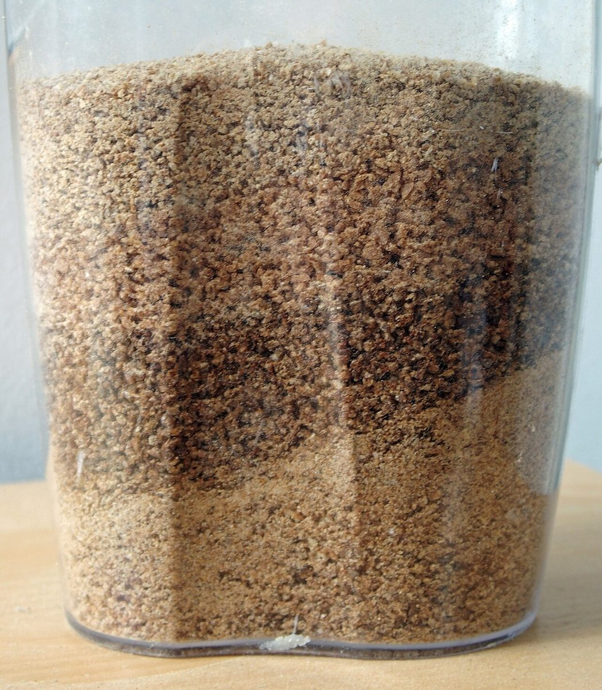

↓ 吸う / 2番穴
MENU
メニュー・価格は準備中です。確認でき次第、ここに掲載します。
準備中のメニュー表
- 1メニュー準備中
- 2価格準備中
- 3ご予約準備中
- 4駐車場準備中
- 5営業時間・定休日準備中
穴に番号だけ振って、中身は空けてあります。内容は確認でき次第、ご案内します。
↑ 吹く / 参考イメージ
断面と質感のクローズアップ(イメージ)



掲載の写真は素材のイメージで、このお店の提供内容を示すものではありません。
↓ 吸う / 2番穴
メニュー・価格は準備中です。確認でき次第、ここに掲載します。
穴に番号だけ振って、中身は空けてあります。内容は確認でき次第、ご案内します。
↑ 吹く / 参考イメージ

掲載の写真は素材のイメージで、このお店の提供内容を示すものではありません。